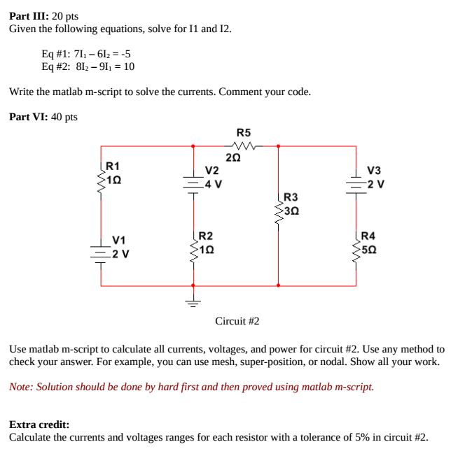
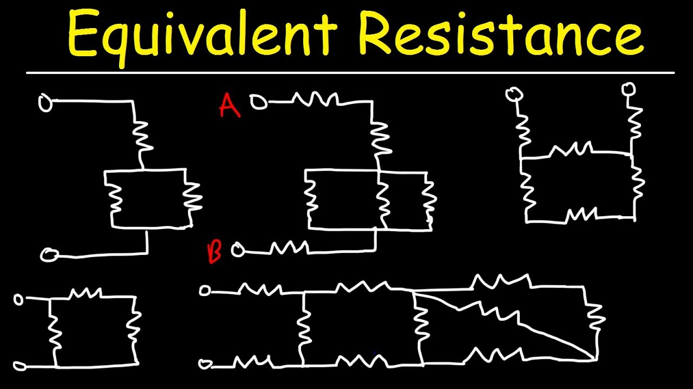
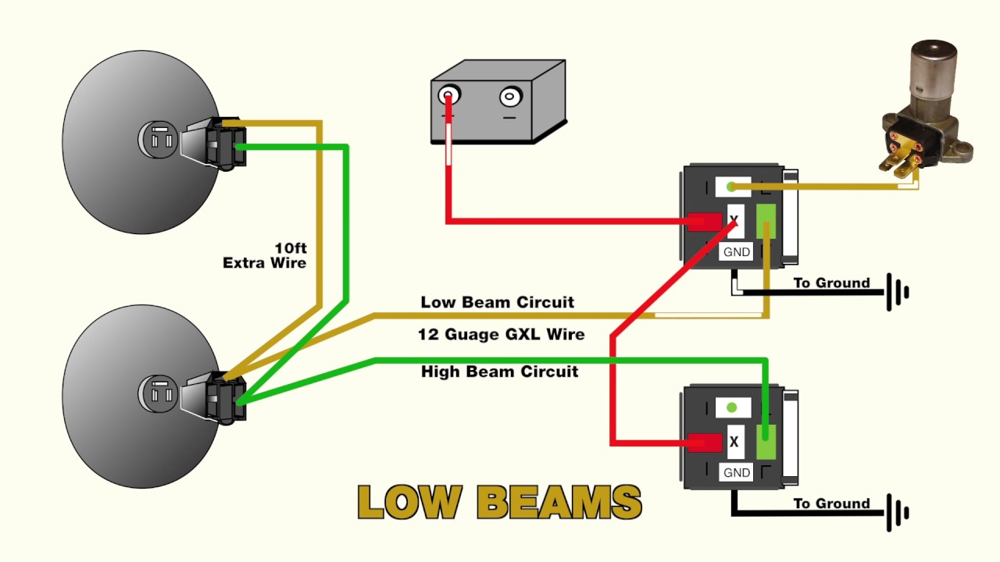
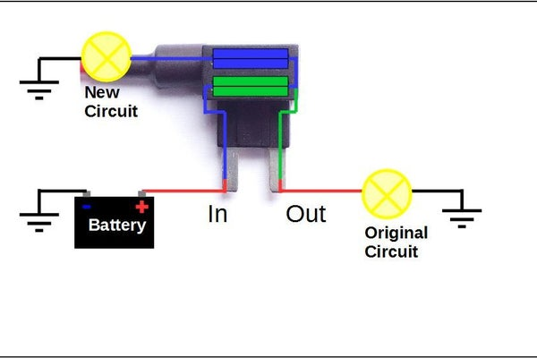
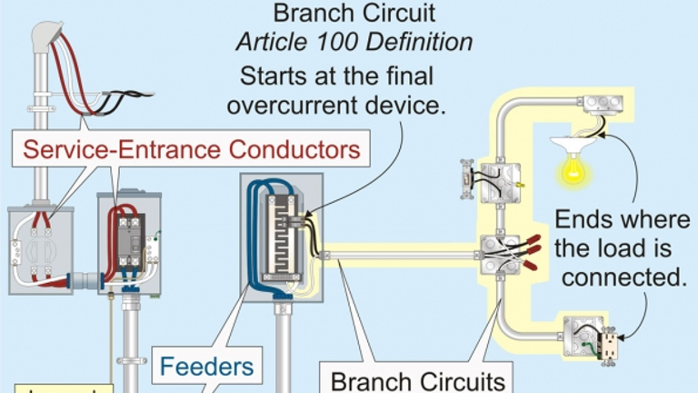
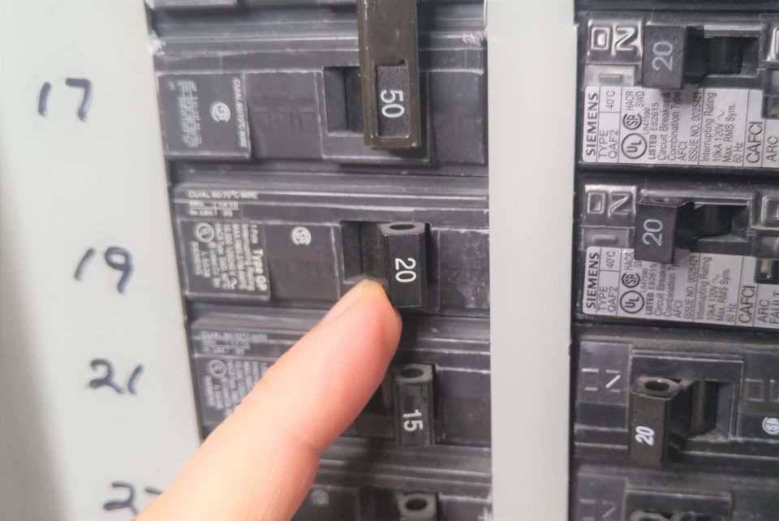

TheElectricalGuy
Electrical high current reason
What controls current Feedback Physics


the positive negative lamps car would help...

Superconductors Frontier
The fastest, quietest superconductive extra power

Natural Computers circuits

SpaceWire is a high-speed serial vacuum tube tuning Tesla invention

split phase Circuit nodes